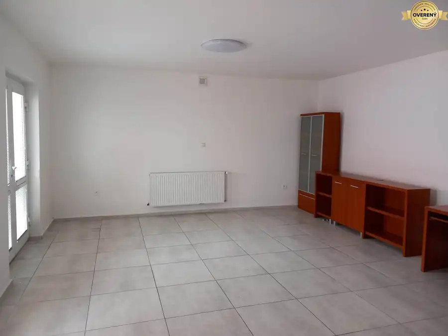
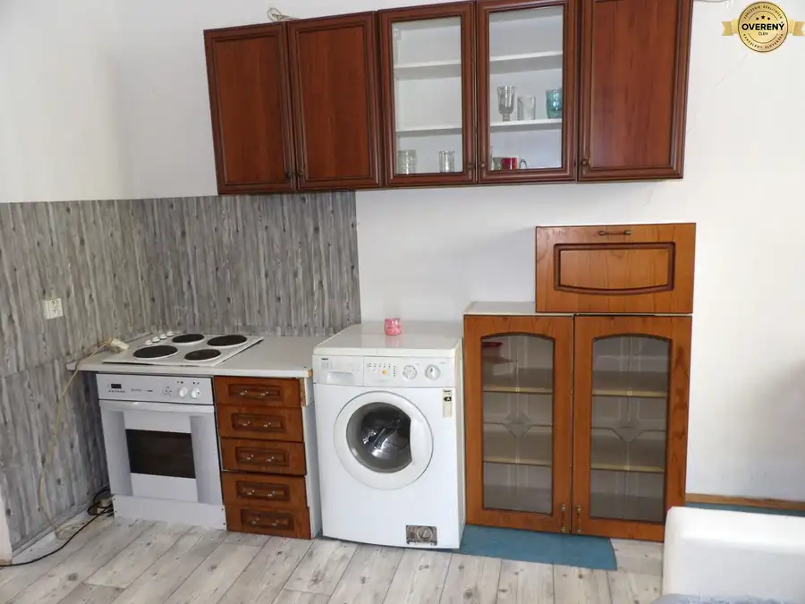
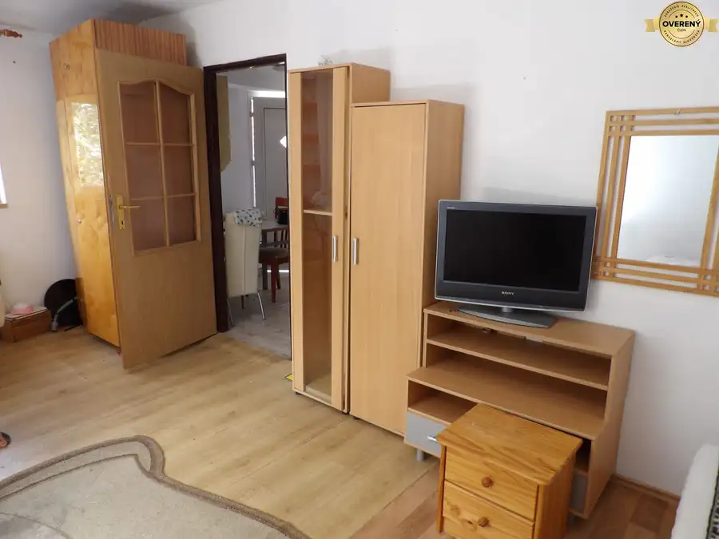
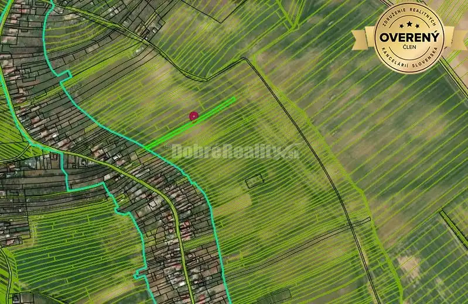

Aktuálna ponuka
8 nehnuteľností, predovšetkým byty, pozemky, chaty a chalupy. Každá má vlastnú stránku s fotkami, popisom a mapou.
Prezrieť ponuku
Zlatica GregorováRealitná maklérka
Realitná maklérka · DOBRÉ REALITY s. r. o.
Predaj a prenájom nehnuteľností · Sereď, Váhovce, Šoporňa

 Nebytové priestory6
215 534 €Podnikateľský objekt s perspektívou na PREDAJ
Váhovce
5-izbový337 m²1. podlažie
Realitná kancelária DOBRÉ REALITY s r. o. ponúka na predaj podnikateľské priestory v obci Váhovce (okres Galanta). Rozsiahly objekt sa nachádza na…
Chaty a chalupy10
55 000 €DOBRÉ REALITY - Sympatická rekreačná chatka so záhradou na predaj
Šoporňa
3-izbový16 m²
Realitná kancelária DOBRÉ REALITY s r. o. ponúka na predaj rekreačnú chatku so záhradou. Nehnuteľnosť sa nachádza v katastrálnom území obce Šoporňa,…
Rodinné domy10
219 000 €Pôvabný domček s očarujúcou záhradou na PREDAJ
Šalgočka
5-izbový150 m²
Realitná kancelária Dobré Reality s r. o. ponúka na predaj vidiecky domček s očarujúcou záhradou. Nehnuteľnosť sa nachádza v intraviláne obce…
Nebytové priestory6
215 534 €Podnikateľský objekt s perspektívou na PREDAJ
Váhovce
5-izbový337 m²1. podlažie
Realitná kancelária DOBRÉ REALITY s r. o. ponúka na predaj podnikateľské priestory v obci Váhovce (okres Galanta). Rozsiahly objekt sa nachádza na…
Chaty a chalupy10
55 000 €DOBRÉ REALITY - Sympatická rekreačná chatka so záhradou na predaj
Šoporňa
3-izbový16 m²
Realitná kancelária DOBRÉ REALITY s r. o. ponúka na predaj rekreačnú chatku so záhradou. Nehnuteľnosť sa nachádza v katastrálnom území obce Šoporňa,…
Rodinné domy10
219 000 €Pôvabný domček s očarujúcou záhradou na PREDAJ
Šalgočka
5-izbový150 m²
Realitná kancelária Dobré Reality s r. o. ponúka na predaj vidiecky domček s očarujúcou záhradou. Nehnuteľnosť sa nachádza v intraviláne obce…
 Pozemok10
154 500 €Parádny pozemok s mobilným domom na predaj
Sereď
3700 m²
Realitná kancelária DOBRÉ REALITY s r. o. dáva Vám do pozornosti vynikajúcu ponuku. V meste Sereď, okr. Galanta si môžete za príjemnú sumu zaobstarať…
Pozemok10
154 500 €Parádny pozemok s mobilným domom na predaj
Sereď
3700 m²
Realitná kancelária DOBRÉ REALITY s r. o. dáva Vám do pozornosti vynikajúcu ponuku. V meste Sereď, okr. Galanta si môžete za príjemnú sumu zaobstarať…

Nebytové priestory5 Cena dohodouNájomné priestory v centre Šale Šaľa 2-izbový56 m² Realitná kancelária DOBRÉ REALITY s r. o. ponúka na prenájom komerčné a prevádzkové priestory. Nachádzajú sa v meste Šaľa (Nitriansky kraj) v centre…
Byt10 Cena dohodouDvojizbový byt v rodinnom dome v Seredi na prenájom Sereď 2-izbový78 m² Realitná kancelária Dobré Reality s r. o. ponúka na prenájom dvojizbový byt so samostatným vchodom v rodinnom dome v meste Sereď. Byt sa nachádza v…
Byt10 Cena dohodouNájomné bývanie v centre Serede Sereď 2-izbový60 m² Realitná kancelária Dobré Reality s r. o. ponúka na prenájom dvojizbový byt so samostatným vchodom v rodinnom dome v meste Sereď. Vaše budúce nájomné…
Pozemok3 33 100 €ZNÍŽENÁ CENA!!! POZEMOK vo vychytenej lokalite na predaj! Vinohrady nad Váhom 3410 m² Realitná kancelária DOBRÉ REALITY s r. o. ponúka na predaj pozemok, ktorý bol kedysi využívaný ako vinica. Nachádza sa v okrese Galanta, v…Tomuto výberu zatiaľ nezodpovedá žiadna ponuka. Napíšte mi, čo hľadáte.
Volám sa Bc. Zlatica Gregorová. Som realitná maklérka kancelárie DOBRÉ REALITY s. r. o. a pôsobím predovšetkým v lokalitách Sereď, Váhovce, Šoporňa a Šalgočka (Trnavský kraj).
8 nehnuteľností, predovšetkým byty, pozemky, chaty a chalupy. Každá má vlastnú stránku s fotkami, popisom a mapou.
Prezrieť ponukuSereď, Váhovce, Šoporňa, Šalgočka, Šaľa a okolie. Ponuku si môžete prezrieť podľa lokality.
Nehnuteľnosti v lokaliteOdhad trhovej ceny, príprava prezentácie, obhliadky, zmluvy a odovzdanie nehnuteľnosti.
Dohodnúť stretnutie
Na čo sa pýtate najčastejšie, skôr než sa stretneme.
Odhad trhovej ceny vychádza z aktuálnych ponúk a predajov v lokalite, nie z cenníkových tabuliek. Podmienky Vám poviem pri prvom telefonáte.
Najprv obhliadka a odhad ceny, potom príprava prezentácie (fotografie, popis, inzercia), obhliadky so záujemcami, rezervačná zmluva, kúpna zmluva, návrh na vklad do katastra a odovzdanie nehnuteľnosti. O každom kroku viete vopred.
Najrýchlejšie cez WhatsApp alebo telefón. Termín stretnutia alebo obhliadky dohodneme podľa Vás.